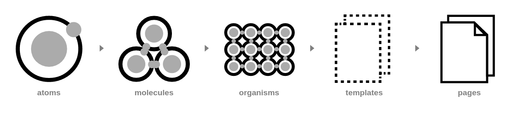

NMP
×
Pattern Lab
Retours d'expérience
by Johan Rouve
Vous allez voir quoi ?
- Pattern Lab
- HTML, CSS ... & Javascript
- Browserify
- Workflow avec Symfony
Pattern Lab
C'est quoi ?
Outils d'aide à la création d'un systeme de design atomic
Avantages
- Coherence du design
-
Flexibilité
- Pre processeur CSS
- Templating
- Page de reference
Inconvenients
- Synchronisation PL <> Symfony
HTML, CSS ... & Javascript
HTML

CSS

Javascript

Browserify permet d'utiliser require('module') dans le navigateur et de packager toutes les dependances
Browserify
Avantages
- Utilisation des modules node.js existants
- Resolution des dependances
- Possibilité de coder avec la derniere norme Ecmascript 2015
- Concatenation, minification, ...
- Fichier unique
Inconvenients
- Chemin relatifs entre modules
- Configuration JS specifique pour PL
- Duplication d'un pattern dans le JS
Chemin relatifs entre modules
var http = require('../../../http');
Le parametre 'paths' de browserify permet de rajouter des chemins pour la resolution des dependances. Pour eviter les conflits avec des modules existants, nous prefixons avec un namespace
var http = require('app/http');
Configuration JS specifique pour PL
Nous generons 2 fichiers avec des 'paths' differents pour que l'un des 2 puisse charger des modules mock
Duplication d'un pattern dans le JS - 1/2
Un transformer permet de charger un fichier twig en tant que module. Nous l'avons forké pour qu'il fonctionne avec la convention de nommage de PL dans les includes.
var template = require('../../../../twig/00-atoms/01-list/list.twig');
Duplication d'un pattern dans le JS - 2/2
Création d'un plugin pour charger un template en suivant la convention de nommage de PL.
var template = require('patterns:atoms-list');
Workflow avec Symfony
On a essayé
Copier - coller de PL vers Symfony. Le moindre changement coté Symfony crée une desynchro des templates.
On s'oriente vers
Un sous module partagé entre PL et Symfony
Inconvenients
- La convention de nommmage PL ne fonctionne pas avec Symfony
La convention de nommmage PL ne fonctionne pas avec Symfony
- traitement sur les Twig pour convertir le nommage PL en nommage SF
- surcharger SF pour pouvoir interpreter le nommage PL